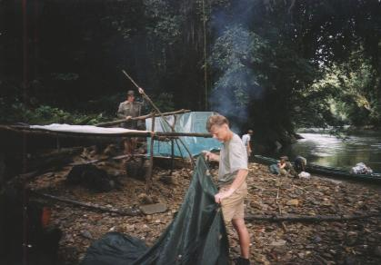

Toen we om 5:30 uur opstonden, leek er een wonder te zijn gebeurd... Het had deze nacht namelijk niet geregend! Hierdoor smeulde het vuurtje van gisteravond nog een beetje. Steven was zoals gewoonlijk als eerste uit de hangtent gestapt en hij maakte van de smeulende massa weer iets moois, zodat we nu eens een keer vroeg konden eten. Als je op een smeulende massa nat hout legt, dan gaat het eerst gigantisch roken. Steven wist wel een effectieve manier om Ries en mij de tent uit te jagen. Aan de kant van het vuur, spande hij het tentdoek op, zodat het een soort luifel werd. Alle rook van het vuurtje dreef zo linearecta de tent in en bleef daar hangen. Adem halen lukte bij mij echt niet meer en ik wist niet hoe snel ik uit die rookmassa komen moest. Over effectiviteit gesproken! Onze mooie witte klamboe bleek helemaal bruin te zijn geworden...
Als eerste heeft Steven de gelijmde waterfilter getest. Omdat alle krachten bij het pompen op een klein stukje plastic komen, brak het opnieuw af. Als alternatief filterden we het water met een koffiefilter waarna we Hadex- druppels gebruikten om het te ontsmetten. Omdat we alleen mini-koffiefilterzakjes mee hadden, ging dat filteren erg langzaam. Na een aantal liter filteren zat er zo weinig gruis in, dat ik hier weinig nut in zag. De Hadex- druppels, die alle bacteriën en virussen doden, zijn wel heel belangrijk. Het water smaakt daarna echter naar chloor, nog erger dan zwembadwater.
Nadat we indo-mie gegeten hadden, werkten we met z'n allen aan het vlot. Na veel hak- en knoopwerk was de basis af. Op deze basis wilden we nog een hele laag met balken plaatsen ten gunste van het drijfvermogen. Gelukkig dat we eerst de basis even getest hadden. Het drijfvermogen viel namelijk erg tegen; het vlot kon nog niet eens één persoon houden; lang niet zelfs... Dit vreesden we al. Het vlot was al zo zwaar, dat het door twee personen nauwelijks te tillen was. Door het geringe drijfvermogen, zouden de extra balken ook weinig zoden aan de dijk zetten. Bovendien zou het minstens een hele dag extra kosten om die balken te vergaren. We wijzigden meteen ons besluit: zo snel mogelijk vertrekken!
We braken de tent af. Alle balken die we voor de tent gebruikt hadden, bonden we vast op het vlot. Onze tassen pakten we heel secuur in, want die moesten gegarandeerd waterdicht blijven. Mijn SURVIVALDOOSJE was ook waterdicht verpakt en droeg ik altijd bij me. Wanneer ik om wat voor reden dan ook alleen en zonder tas moet overleven, dan biedt dit survivaldoosje een aantal basisartikelen om te overleven. Alleen achterblijven is niet geheel ondenkbaar in dat wilde water. Als je van het vlot los raakt, dan ben je voor ongeveer 90% overgeleverd aan de stroming. Je moet het dan doen met jezelf, je kleding en de dingen die je bij je draagt.
Rond 13:00 uur vertrokken we met ons vlot. Ries en ik hadden onze slippers aan en onze schoenen zo hoog mogelijk op het vlot vastgebonden, zodat die (hopelijk) droog zouden blijven. Ries wilde eerst op blote voeten, maar dat hadden we hem afgeraden. Steven droeg zijn bergschoenen. Het feit dat die zeiknat en loodzwaar zouden worden, nam hij op de koop toe. Ik had gewoon mijn broek aan, zodat ik mijn survivaldoosje, mijn paspoort, mijn geld en mijn ticket bij me droeg. Allemaal waterdicht verpakt. Richard droeg een zwembroek. Zo had iedereen zijn eigen kijk op de zaak. Onze tassen bleken nog meer drijfvermogen te hebben dat het hele vlot. We hadden bewust zo veel mogelijk lucht in onze waterdichte zakken gelaten en onze waterflessen zoveel mogelijk leeg meegenomen. Het zag er allemaal erg maf uit: het vlot was niet meer zichtbaar en onze tassen staken een beetje boven het water uit. Wij zaten tot ons middel in het water.
Steven had al wat wildwater-ervaring opgedaan in zijn leven en hij schrok het minst van het wilde water. Het water was vrij laag (het had de afgelopen nacht wonderbaarlijk genoeg niet geregend). We botsten voortdurend ergens tegenaan. Ik was erg blij dat we zoveel aandacht besteed hadden aan het frame van het vlot. Als we de balken niet in precies de goede vorm gehakt hadden, dan zouden er zeker balken tussenuit geschoven zijn tijdens één van de ruwe botsingen. Regelmatig kwamen we in een kom: een grote inham in de rivier met tegenstroming. Als je niets doet, dan blijf je voor eeuwig ronddrijven. De invloed die we op het water hadden, was zeer beperkt. Om uit zo’n kom te komen, moesten we ons soms helemaal geven. Terwijl we het vlot vast hielden, zwommen we zo hard als we konden met als doel te ontsnappen uit de stroming in de kom. Vaak lukte het pas na een aantal keren. We bleven maar rondjes draaien en verloren daardoor erg veel tijd. In de diepere gedeelten van de rivier waren ook draaikolken die zich langzaam verplaatsen. Als je daar in komt, dan voel je dat het vlot een beetje naar beneden gezogen wordt.
|  |
Deze foto is gemaakt op zaterdag 25 september; de situatie van ons kamp was vergelijkbaar met die dag. We waren hier natuurlijk zonder Ebok en Jelayan. |
Na twee uur naderden we een kiezelstrand. Het werd ook tijd, want we rilden van de kou. Ja, ruim twee uur in de rivier zitten is zelfs in de tropen koud! Vooral omdat we in de bergen zitten en relatief dicht bij de oorsprong van de rivier zijn. Kiezelstrandjes zijn de enige plekken waar je vrij gemakkelijk aan kunt meren. Het is eigenlijk de bodem van de rivier (bij hoog water) en het water wordt er heel geleidelijk dieper. De stroming is daardoor niet zo sterk. Eindelijk weer eens een relatief vlak oppervlak! Ongeveer 1,5 meter boven het wateroppervlak, vlak bij de steile oever van de rivier (bij hoog water), lag een enorme dikke boomstam. Deze omgevallen boom die een doorsnede had van een kleine 1,5 meter, zagen wij als een prima basis voor onze hangtent. We zouden dan ongeveer 3 meter boven het wateroppervlak slapen. Dat moest hoog genoeg zijn, toch? Het opzetten van de tent duurde weer behoorlijk lang. We gebruikten balken van de vorige tentconstructie die we met ons vlot meegenomen hadden. Terwijl Ries en ik de tent gingen opzetten, werkte Steven aan het vuur op het kiezelstrand. De luchtvochtigheid was hier wat minder, want de zon had vrije toegang tot het kiezelstrand. Steven had het vuurtje snel aan de praat. Prioriteiten stellen is heel belangrijk in de jungle. Zo onderbraken Ries en ik onze bouwwerkzaamheden om als gekken brandhout te zoeken voor Steven’s vuurtje dat aan het sterven was wegens gebrek aan brandhout. Toen het donker begon te worden, ging Richard koken, terwijl Steven en ik de losse eindjes van de tent nog moesten afbouwen. Om het zeil te bevestigen, maakte ik gebruik van natuurlijke materialen: met lianen of kronkeltakken kon ik het zeil op een aantal plekken vastbinden om zodoende touw uit te sparen. We aten pasta (2 zakjes 'Spaghetteria Fromagio' van Knorr). We hadden vier van deze zakjes meegenomen uit Nederland. De inhoud van zo'n zakje hoeft alleen maar even te koken met water en er zitten redelijk veel calorieën in.
Het bleek dat Richard door het varen een behoorlijke snee in zijn teen had opgelopen en ik had wat beurse plekken op mijn benen. Ik besloot om de volgende keer toch mijn bergschoenen aan te doen tijdens het varen, net als Steven. De stevige bergschoenen die wij hebben bieden ontzettend veel bescherming tegen scherpe rotsen. ‘s Avonds lagen we heerlijk op het kiezelstrand! Omdat we eigenlijk op de bodem van de rivier zaten, waren er heel weinig insecten. Bij ons vorige kamp zou je niet zomaar op de grond gaan liggen... We dronken thee en na nog een ronde thee doofde het vuurtje langzaam. Ries was inmiddels op de keiharde kiezels in slaap gevallen en ik bracht met Steef het vuurtje weer wat tot leven. We probeerden de kleding die we aan hadden wat te drogen bij het vuur, zodat we het ‘s nachts niet zo koud zouden hebben. We zaten met onze benen om het vuur om het kruis wat te drogen. Daarna een tijdje in de hurkstand om de achterkant droger te krijgen. Nu hoefden we tenminste wat minder talkpoeder te gebruiken voordat we gingen slapen. Omdat het vuur nog zo perfect brandde hebben we zelfs nog pinda’s geroosterd met lekker veel zout en wat olie. Ries werd wakker in de heerlijke pinda-lucht.
Na de pinda’s zijn we de hangtent ingeklommen. De nachten zijn relatief koud, omdat je nooit helemaal droog bent. De PARANG die we steeds gebruiken bij het hakken van hout en bij het bouwen van de tent, was ik kwijt geraakt. Ik had al een hele tijd met een zaklamp gezocht, maar onze kleine lichtgewicht zaklampjes hebben een erg klein bereik. Als het water vannacht niet al te veel stijgt, dan komt ie wel weer terecht!
Rond 3:00 uur begon het hevig te regenen en om 4:00 uur zag Steven dat het kiezelstrand er nog gewoon was, maar het was iets kleiner. Om 5:00 uur stapte Steef uit de tent en het kiezelstrand was bijna weg: er was gewoon water onder de hangtent! De steunpilaren van de contructie stonden gewoon in het water en het water was een kleine meter onder het zeil waarop Ries en ik nog lagen.
Naar de volgende dag | Index